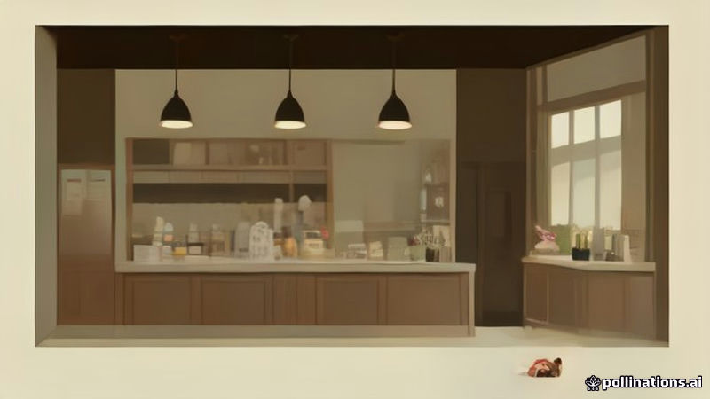

বকেয়া সিগারেটের টাকা নিয়ে ঝগড়া, চা দোকানির অচেতন অবস্থা
Prothom Alo · 2026-11-14
AI-generated illustrationপ্রথম আলো অনুযায়ী, জুয়েল ও ইব্রাহীমের মধ্যে বকেয়া সিগারেটের টাকা নিয়ে তর্কের পর জুয়েল ইব্রাহীমের ঘুসিতে অচেতন হয়ে পড়ে।
প্রথম আলোর প্রতিবেদনে বলা হয়েছে, জুয়েল ও ইব্রাহীমের মধ্যে বকেয়া সিগারেটের টাকা নিয়ে তর্ক শুরু হয়। তর্কটি ইব্রাহীমের ঘুসিতে বাড়ে, যা স্থানীয়ভাবে একটি চা দোকান হিসেবে পরিচিত। সংঘর্ষের সময় জুয়েল মাটিতে পড়ে অচেতন হয়ে যায়। ঘটনায় আহতের অবস্থা বা পুলিশ হস্তক্ষেপের কোনো তথ্য পাওয়া যায়নি। এই ঘটনা স্থানীয় স্তরে ক্ষুদ্র আর্থিক বিরোধ কীভাবে দ্রুত হিংসাত্মক রূপ নিতে পারে তা প্রকাশ করে।
Read the original reporting at the links above.
English version
Unpaid cigarette debt sparks clash, leaves shopkeeper unconscious
According to Prothom Alo, a dispute arose between Jewel and Ibrahim over unpaid cigarette money. The argument escalated at Ibrahim’s shop, known locally as a ghusi. During the confrontation, Jewel fell to the ground and lost consciousness. No further details about injuries or police involvement were provided. The incident highlights how small financial disagreements can quickly turn violent in local settings.